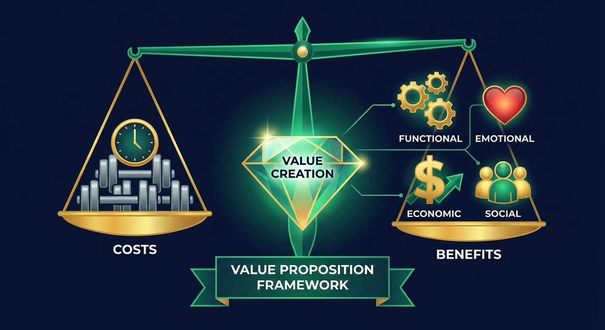
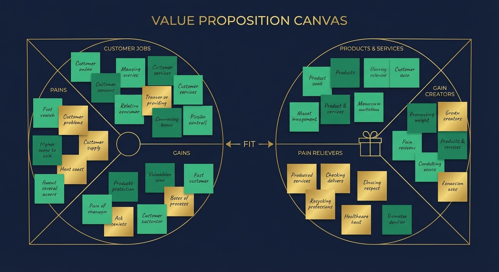
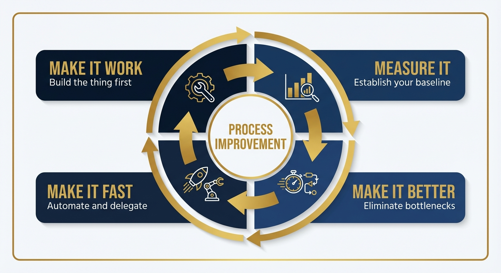

Workbook 3: The Value Dimension
Class2Career: The Business Communication Toolkit
By Ignis Spindler, PhD
Value is the most-used, least-defined word in business. Everyone invokes it. Executives build entire strategies around it. Job postings demand it. And if you ask ten smart people in the same conference room to define it, you will get ten different answers.
That is not a bug. It is a feature of how business actually works.
In academia, terms carry precise definitions. A p-value is a p-value. Standard error is standard error. Measurement is measurement. In business, the vocabulary is deliberately soft because business problems are soft. They involve people, preferences, markets, and perception, none of which cooperate with precision.
This workbook covers two dimensions of the same idea: value and productivity. You cannot talk about one without the other. Creating value is the goal. Productivity is the mechanism for getting there. Understanding both, how they are defined in business, how they are measured, and how to build a reputation around delivering them, is what separates people who survive a career transition from people who thrive in one.
Part 1: What Value Actually Means
The Ambiguity Is Intentional
When you were last in a university, value had a reasonably clear meaning. Theoretical value, historical value, pedagogical value. These are real categories with real criteria. Business value does not work that way.
Consider water. You have bought a bottle of water and wished you had not because you could taste the plastic or the mineral residue. You have also drunk from a fountain at just the right moment and it tasted like the freshest thing on earth. Same product. Radically different value. The difference lived entirely in your experience of it, not in any property of the water itself.
Now consider a relationship. You know people whose presence in your life is, as you would say, invaluable. You are not going to put a dollar amount on that relationship. But you are getting something from it that you could not easily replace. The word "value" covers both the bottle of water and that friendship, which should tell you something about how aggressively ambiguous it is.
Nietzsche was among the first Western thinkers to treat "having values" as a coherent category of thought. That was not long ago, as intellectual history goes. And yet value is now the central vocabulary of commerce. You are joining an industry that built its entire culture around a word that does not have a rigorous definition. Your job is to learn to speak that language fluently, not to demand it become more precise.
The Value Equation

Beneath the ambiguity, business people think about value through a rough equation:
Value = Outcome Received ÷ Cost to Obtain
Better outcomes at lower cost equals more value. Businesses that optimize this equation successfully attract customers, retain them, and grow. Businesses that do not, eventually disappear.
This framing is useful because it forces two questions that business people ask constantly: What are people actually getting from this? And what does it cost them to get it, in money, time, attention, and friction?
The cost side includes more than price. A product that takes four hours to learn costs something even if it is free. A service that requires six phone calls to fix one problem costs something in patience and time. The outcome side includes more than features. People remember how something made them feel. That memory is real value.
Types of Value
In any business context, value shows up in roughly four forms:
| Type | Description | Example |
|---|---|---|
| Functional | The thing literally works and does what it promises | Software that generates a report correctly |
| Economic | It saves money, generates revenue, or reduces cost | An NLP model that removes 40 hours of manual nurse labor per month |
| Experiential | The process of using it feels good or smooth | Onboarding that takes 10 minutes instead of a day |
| Symbolic | It signals something about status, trust, or identity | A brand association that makes a client feel confident buying |
Most products and services deliver value across all four types simultaneously. The most common mistake for people entering business from research is to focus only on the functional and economic types and ignore the experiential and symbolic entirely. That is exactly backwards from what customers actually respond to. People make decisions on experience and feeling, then justify them with economics and function afterward.
Part 2: How to Add Value
The List That Proves the Point

If you ask Google for ways to add value to a business, you get a list that includes things like: submit high-quality work, become an expert, ask the right questions, focus on what you can do, encourage faster production, adjust your marketing strategy, make a unique product, and become a customer of your own business. The variance in that list is enormous. That variance is the point. Almost anything can add value, depending on context. The question is always: valuable to whom, and measurable how?
Be a Customer of Your Own Business
Years ago, when interviewing for a data science role, there was a visit to the Facebook campus in Palo Alto before it became Meta. Walking through the neighborhood around those offices, something was immediately striking: the number of young people completely absorbed in their phones. Tables of five people at lunch, all with heads down. Pedestrians crossing streets while staring at screens. At first it seemed absurd, and a little depressing. Then the realization landed: these were almost certainly engineers. They were immersed in the product they were building. Not because they were addicted. Because immersion is research.
If you work on a product, use it constantly. If you work on a service, experience it as a customer would. The friction you feel is friction your customers feel. The confusion you feel is confusion that is costing you revenue. No market research survey replicates the insight of lived experience inside your own ecosystem.
Submit Work That Removes Work
High-quality work does not just mean correct work. It means work that reduces friction for the person receiving it. A spreadsheet with formulas already entered. A data analysis with axis labels and a plain-English summary. An email with context, not just a request. These are not just nice gestures. They are small acts of salesmanship. You are showing the person downstream what working with you is like. They will remember that far longer than they remember the specific numbers you provided.
Expertise Is a Currency
When an expert joins a sales conversation, trust in the room rises immediately. The client's willingness to proceed accelerates. The expert does not have to say much. The credential of being the person who actually built the thing, or who has spent ten years with this class of problem, carries weight that no slide deck can replicate.
In business, expertise is demonstrated through outputs, not credentials. The academic world runs on the length of your CV and the prestige of your invited talks. The business world is watching your last quarter. This is uncomfortable for people coming out of research, where reputation accumulates slowly and carefully over years. In business, you prove expertise by doing something visible and succeeding at it.
Ask the Right Questions
There is a book called The Mom Test by Rob Fitzpatrick. The title comes from a simple observation: if you ask your mother whether your business idea is good, she will say yes because she loves you. Her answer is useless. The skill of qualitative research, and of good business inquiry generally, is asking questions that make it impossible for someone to give you a comfortable answer that does not reflect reality. You ask about behavior, not opinion. You ask about past experience, not hypothetical future preference. You ask open-ended questions and then, critically, you stop talking.
The best interviewer worked alongside for three years was extraordinary. Over roughly twenty candidate interviews searching for three data science hires, every single person he flagged as risky turned out to be risky, and every person he endorsed turned out to be excellent. The insights he surfaced in forty-five minutes of conversation were things that never came up in the structured parts of the process. Asking the right questions is a genuine, learnable skill, and it drives real business outcomes.
Ask about what people have done, not what they would do. "Have you ever solved this problem yourself?" reveals more than "Would you pay for a solution to this problem?" People are honest about their past. They are optimistic about their future.
Recognition Is Real Output
One of the consistent findings in organizational psychology is that the leaders people remember as exceptional are the ones who made others feel significant. Recognizing someone's contribution does not cost money or time. But it builds culture, and culture is the substrate that every other business process runs on.
When you tell a colleague that their work moved a project forward, or thank someone above you for a decision that made your work easier, you are doing something that is genuinely productive for the business. You are reducing the entropy of the organization. You are making it less likely that a talented person leaves because they felt invisible.
That in itself is value. It may be harder to put a dollar sign on than a sales figure, but the cost of losing a good person and replacing them, in recruiting time, onboarding time, productivity lag, and cultural disruption, is significant. Recognition is prevention spending.
Follow Up
If you send an email today and expect a response, and do not receive one by end of day, follow up tomorrow morning. One line: Following up. That is all. No snarky tone. No passive implication that the person is failing you. Just a reminder that you sent something and you are still thinking about it.
Business communication slips constantly. People are in back-to-back meetings. Inboxes are noisy. The follow-up email is not rude. It is professional. Every experienced business person does this, and does it without apology, because they understand that the alternative is projects stalling because someone forgot to respond.
Part 3: Quantifying Value
The Hard Part
Describing value is easy. Quantifying it is where most people from research backgrounds get stuck. In academia, the value of work is determined by peer review, citation count, and grant funding. These are imperfect measures, but they are measures. In business, the standard is simpler and more demanding: what did this cost, and what did it produce? Can you express that difference as a dollar amount?
For salespeople, this is trivial. Revenue in minus revenue in last quarter equals your contribution. For almost everyone else, it requires construction.
The Catheter Story: Quantifying Labor Savings
Here is a real example of how to attach a number to work that appears, on the surface, to resist measurement.
At a hospital, nurses are responsible for manually tracking two types of catheters: central lines (going to the heart) and Foley catheters. Both carry infection risk. Hospitals are required to track infection rates against the total number of patients using these devices. That denominator, the count of patients with each type of catheter, is collected by hand. A nurse walks ward to ward at a fixed time each day, writes down the count on paper, and hands it to a coordinator who enters it into a spreadsheet. That coordinator then rolls up all the ward totals at month's end and submits the infection rate.
Every step of this process is manual, slow, and prone to error. Patients leave before the nurse makes her rounds. Patients arrive after. Transcription errors accumulate. The rate that gets reported to infection control is probably slightly wrong every month.
An NLP model was built that reads every clinical note in the system and automatically identifies whether a patient has a central line or a Foley catheter. It produces an accurate count, in real time, for every ward in the hospital, without anyone walking anywhere or writing anything down.
How do you put a value on that? Start with what you know. A nurse earns roughly $60,000 to $70,000 per year. Divide that by work hours and you have an hourly rate. Estimate how long the manual counting process takes per nurse per ward per day. Multiply by the number of wards. Multiply by the number of working days in a year. You now have a floor estimate for the labor cost the software removes. Add the value of reduced error rates, which affect compliance reporting. Add the value of nursing time redirected to patient care.
That is how you quantify value that has no natural unit. You attach it to something that does have a natural unit, usually time or money, and you build the calculation honestly. The number you produce is an estimate, not a truth, but an honest estimate is far more persuasive than a vague claim about operational efficiency.
Think of something you did in the last year that saved someone time, reduced errors, or made a process faster. Now try to estimate the dollar value of that work:
- What was the time saved per occurrence? (hours)
- How often did it occur? (per week, month, or year)
- What is the hourly cost of the person whose time was saved?
- Multiply: time saved × frequency × hourly rate = annual value
This is the number you should have ready when your performance review comes around.
KPIs, OKRs, and the Culture of Measurement
Businesses that are well-run have goal-setting mechanisms. Some call them Key Performance Indicators (KPIs). Some call them Objectives and Key Results (OKRs). There are probably eight other acronyms that mean the same thing. The underlying idea is always the same: what are you trying to accomplish, and how will you know when you have accomplished it?
For someone coming from research, this framing is not foreign. A hypothesis, a measurement plan, a result. The difference is frequency and stakes. Business goals are often quarterly, sometimes monthly. Missing them has immediate consequences. Hitting them has immediate rewards. The cadence is faster and the feedback loop is shorter than anything academic.
Set your goals to be slightly ambitious internally but attainable externally. What you tell your boss you are going to accomplish should be achievable with effort. What you actually aim for in your own mind can be higher. Consistent delivery of what you promise is worth more than occasional heroics followed by misses.
Also: set many small goals rather than one large one. The software development world calls this agile. You are chunking a large project into accomplishable steps and delivering value at each step rather than waiting until the end to show anything. This is how you maintain stakeholder confidence and how you maintain your own momentum.
Keep the List
Keep a running log of everything significant you do at work. Not a diary. A list. Date, project, outcome. One sentence per entry.
At most companies, performance reviews happen annually. Your manager is responsible for reviewing dozens of people while also running their own work. They will remember two or three things you did this year. If two of those things were disappointments, and you have nothing else in front of you, the conversation will be dominated by the disappointments.
If you have a list of twenty-five contributions, the conversation changes completely. You control the frame. You walk in prepared. The log also helps you at job interviews, salary negotiations, and any conversation where someone asks what you have actually accomplished.
Part 4: Measuring Productivity
The Uncomfortable Truth
Productivity is nearly as ambiguous as value, and for the same reason. It is easy to measure for salespeople (revenue generated) and nearly impossible to measure for everyone else with any precision.
Consider this example. At a software company, building an AI chatbot for the customer service team. The argument for it is simple: customer service representatives (called subject matter experts) spend their days answering questions via chat, email, and ticketing systems. Many of those questions are probably simple and repetitive. A chatbot could handle them. That would free the SMEs for complex work and allow the company to serve more clients without proportionally increasing headcount.
Reasonable argument. Except there is one problem: no one has counted how many questions the SMEs currently answer, what proportion are simple versus complex, or how long each type of interaction takes. There is no baseline. So when the chatbot is built and deployed, there is no way to say how much time it saved. The number is real. It just cannot be demonstrated.
This is an extremely common situation. The chatbot probably does save time. The value is probably real. But "probably real" is not a number anyone can present in a planning meeting. The lesson: before you build anything that is supposed to improve a process, measure the process first. Establish the baseline. Otherwise you cannot prove what you improved.
Before you improve a process, measure it. Before you automate something, count how long it takes manually. Before you reduce errors, establish your current error rate. The baseline is the before picture. Without it, you cannot show the after.
The $1,000 Meeting
A number of companies have started doing something worth knowing about. When a meeting starts, someone calculates the cost. If ten people are in the room and each earns roughly $100 per hour, that meeting costs $1,000 for every hour it runs. The question gets asked aloud: What are we all doing in this room?
This is not a gimmick. It is a useful frame for thinking about productivity at the organizational level. Time is the most expensive resource a company has. Every meeting that produces no decision and drives no action is a real cost, not an abstract one. If you internalize this, you will run meetings differently. You will show up having read the pre-read. You will state the goal at the start. You will end with everyone saying what they are going to do and when they are going to do it by.
That last part is important enough to say plainly: at the end of every meeting, state your accountability. "It looks like I'm taking items one, two, and three. I can have number one done by Tuesday, number two by Wednesday, and number three will take me about two weeks. How would you like me to follow up when number one is complete?" That single habit, done consistently, will make you look like the most dependable person in most rooms you will ever sit in.
Productivity Metrics
Different departments measure productivity using different metrics. Here is a reference map:
| Department | Metric | What It Measures |
|---|---|---|
| Finance | Revenue per employee | Total revenue divided by headcount |
| Sales | Revenue per rep | Individual quota attainment |
| Operations | Employee utilization | Percentage of capacity actually deployed |
| Customer Service | First-call resolution rate | Problems solved on the first contact |
| IT / Support | Ticket-to-resolution time | Speed of issue closure |
| Software Dev | Defect escape ratio | Bugs that reached users per release |
| Software Dev | Story points per sprint | Agile throughput per two-week cycle |
| General | Plans-to-done ratio | Percentage of planned work completed |
Note that finance and customer service look at the same customer relationship differently. Finance asks: did they renew? Did we have to discount? Did we issue refunds? Customer service asks: did we resolve the problem? Were they satisfied? When the head of customer service and the head of finance sit down together, they are looking at the same data through different frames and they will often reach different conclusions about whether things are going well. Understanding both frames will serve you in cross-functional conversations.
The Big Three Frameworks
Three management philosophies dominate the productivity conversation in most modern businesses:
Agile
Deliver value in small increments. Do not design for the endpoint before you have shipped the first working version. Build the one thing that everyone really wants, ship it, then improve. Agile is excellent at making something that already works, better. It handles building something entirely new less gracefully.
Lean
Eliminate bottlenecks. Find the place where work piles up and fix it. Toyota built the modern assembly line on this principle in the 1990s, producing cars that routinely reached 200,000 miles when nothing else on the road did. The competitive advantage was not exotic technology. It was disciplined bottleneck elimination.
Six Sigma
Prevent defects from escaping at all. Six Sigma (named after the statistical threshold where only 3.4 defects occur per million opportunities) trains practitioners, called Black Belts, to optimize existing processes to near-perfection. It is intensive, methodical, and best suited to mature, repeatable processes.
Part 5: Managing Your Own Productivity
Make It Work. Then Make It Better. Then Make It Fast.

The most useful piece of process improvement advice that holds up across every context is this sequence: make it work, then make it better, then make it fast. In that order. Never in any other order.
When building something new, the instinct in research is to get it right before you share it. In business, the instinct should be to get it working first, even imperfectly, and share that. When building a function in code, write the version with the for loops first. It might be slow. It might be inelegant. But it will be a thing that runs and produces an output that someone can react to. Once you have that, you can optimize it. You can parallelize the loop, eliminate redundant steps, improve the accuracy. Once it works well, you can make it fast, which usually means automating it so it no longer requires your ongoing attention.
Elon Musk's approach to rocket engineering is a blunt illustration of this. He launched four rockets knowing they were going to crash. Each crash taught him more than any simulation could. Failure was the research. The point was never to succeed on the first try. The point was to fail as fast as possible, learn from the specific way things broke, and iterate. This is genuinely difficult for people trained in academic environments where publication requires a finished, polished, peer-reviewable result. Business has a different standard: something that works well enough to ship today is worth more than something that is perfect and still in development.
Applied Product Management: Do the Job Backwards
One of the best productivity habits, for any role in any industry, is to start with the end in mind. Before lifting a finger on any task someone has assigned, ask: what does done actually look like? What form will this take? Where will it show up? Who will use it, and how?
People often request things without fully knowing what they want. Someone asks for an analysis. What they really want is a decision aid. Someone asks for a dashboard. What they really want is one number they can put in a board presentation. If you build exactly what was requested without understanding the intent, you may do excellent work that serves no purpose. If you spend ten minutes asking the right questions first, you often discover that the actual request is different and simpler than the stated one.
One practical example: a large data project required building a predictive model as one component of a larger effort. Rather than waiting until the full project was complete to show any progress, a complete model documentation report was written and handed over, ten pages covering methodology, outputs, accuracy metrics, and infrastructure implications. The final product was months away. The report was something real that could be reviewed, critiqued, and built on. It proved progress. It kept stakeholders engaged. It demonstrated that the work was serious.
Always think about what you can hand over before the project is complete.
Collaboration Kills Entropy
The things that reliably destroy productivity in any organization are well known: people working in isolation and duplicating efforts, bugs or errors that compound and slow everything down, and nothing being measured so no one knows whether things are getting better or worse.
The antidote to all three is communication. Collaboration means knowing what others are doing before you start, so you do not replicate it. Measurement means knowing whether your process is improving. Follow-ups mean problems do not stay hidden until they become crises.
There is a trap that technically skilled people fall into, particularly those coming from academic settings. They go deep on a problem alone for weeks, produce something impressive, and then present it to people who have been wondering what on earth they have been doing all that time. The business culture does not reward this, even when the output is excellent. What the business culture rewards is visibility. Tickets in progress. Status updates. Partial results delivered early. Communication at every step.
At the end of every meeting, before people close their laptops, cover three things:
- What I'm doing: State your specific tasks.
- When I'll have it: Give a date for each item.
- What's next: Propose the follow-up touchpoint.
People who do this consistently get described by leadership as "reliable," "dependable," and "someone I want on my projects." It costs about ninety seconds per meeting.
Part 6: Managing People and Projects
Operations vs. Development
One of the clearest structural distinctions in any business is between the people who build new things (development) and the people who keep existing things running (operations). These two groups have different skills, different incentive structures, different tolerances for ambiguity, and different relationships with failure.
Development is building the boiler. Operations is making sure the boiler runs every day. The person who invented the boiler does not need to be in the building for the boiler to run. In fact, if the inventor is still personally required to run the thing they built, the build was not complete. A well-designed system can be handed off. Operations staff can maintain it without understanding its entire architecture. The developer can move on to something new.
Building something new always implies that, eventually, it should be offloaded to operations. If you design something that only you can maintain, you have created a dependency that benefits no one, including you. It traps you. Part of building well is building for handoff.
Operations roles, across most industries, have higher turnover and lower pay than development roles, not because the work is less important (it often is not), but because the skills are more interchangeable and the growth ceiling is lower unless someone pursues specializations like Lean or Six Sigma certification. Knowing this distinction helps you position yourself correctly when entering a business context.
Project Management: The Red-Yellow-Green World
If you work at any company of meaningful size, you will eventually sit in a meeting where someone presents a project status dashboard. It will use red, yellow, and green dots. Red means something is blocked or significantly behind. Yellow means there is risk of delay. Green means things are on track.
The important thing to understand about those red dots is that in a healthy organization, a red dot is an invitation to help, not a public accusation of failure. When a senior leader sees red on a project they care about, the question they should be asking is: What do we need to do to unblock this? Not: Who is responsible for this red dot?
The tool that underlies these status dashboards is called a Gantt chart (after Henry Gantt, the industrial engineer who created it). A Gantt chart is simply a visual timeline of tasks, showing when each is planned to start, how long it should take, and how much is complete. Software like Jira, Asana, and Pivotal Tracker generate these automatically from the tickets your team creates and closes. If you have never used one of these tools, even a free personal Asana or Jira account is worth experimenting with before your first business role.
People Management: The One-Third Principle
Years ago, during an acquisition, the company was interviewing candidates for a new CEO. One of the finalists, a person who had run several mid-sized businesses through growth and transition, described his approach to walking into an organization. He said he already knew, before reviewing any data, what he would find. Roughly one third of the people were going to do more than expected, show initiative, and be excited about the change. One third were going to coast: predictable, competent, not outstanding. And one third were going to resist, complain, and eventually leave or need to be asked to leave. His job, as he described it, was not to change the percentages. They were always roughly the same. His job was to identify which third each person was in as quickly as possible and respond accordingly.
Whether you manage people or aspire to, that framing is useful. Not everyone in any organization is going to be energized by their work. The goal of management, especially early management, is to create the conditions where the top third thrives, the middle third grows, and the bottom third is managed compassionately but honestly.
The Boiler Pipe Story
There is a classic consulting story that gets at something real about expertise and its value. A school's boiler breaks down in the middle of winter. The in-house custodians cannot fix it. Three different repair services are called in. None of them can identify the problem. Finally, someone finds a number for an old specialist. He says his rate is $1,000 for the visit, regardless of outcome. The school is desperate. Fine.
The specialist arrives, walks around the boiler for two minutes, locates a specific section of pipe, and taps it three times. The boiler starts. He is there for five minutes. He hands over his invoice for $1,000.
The facilities manager objects: "You were here for five minutes. How is that worth $1,000?" The specialist says: "The five minutes were not what you paid for. You paid for knowing where to tap."
This is what experience in a domain is worth. Businesses will pay what seems like an irrational premium for someone who has seen the failure modes before and can navigate to the solution without burning two weeks of labor figuring out what the custodians already tried. Developing that kind of knowledge in your field, the kind that lets you go directly to the place where things tend to break, is a legitimate long-term business strategy for your career.
Change Management: A Signal Worth Reading
Change management is a formal business practice for managing large organizational transitions: acquisitions, reorganizations, leadership departures, layoffs. Most large companies have someone trained in change management, and when a big event is coming, they will schedule workshops and presentations.
There is a useful way to think about change management that no formal workshop will tell you directly: if you are being given change management training, something significant and potentially destabilizing has happened or is about to happen. That is the signal. The training itself is often less useful than the signal.
The real business case for change management is institutional knowledge retention. When a company acquires a smaller business, the thing they are most afraid of is not the technology or the customer contracts walking out the door. It is the people. Specifically, the people who carry the relationships.
After a CEO who had built a company from nothing left, the number two executive who followed him two months later carried the primary relationship with the company's largest single client. That client represented roughly $10 million of the $40 million in annual revenue. When the executive left, the client went quiet. The acquiring company immediately started offering money to bring the executive back, just to stabilize the relationship. He declined. That $10 million of revenue was genuinely at risk in a business they had paid $150 million to buy.
The lesson is not that you should make yourself irreplaceable through secrecy. The lesson is that relationships are assets, and the business treats them as such. Build yours carefully.
Part 7: Academic Skills Translated
| What You Did in Academia | What It's Called in Business | Why It Matters |
|---|---|---|
| Qualitative interviews and survey design | Customer discovery, user research | Informs product and marketing strategy |
| Statistical modeling and inference | Predictive analytics, data science | Drives decisions; quantifies risk and opportunity |
| Writing grant proposals | Business case development, ROI analysis | Justifies investment in new initiatives |
| Teaching and curriculum design | Training program development, knowledge management | Builds organizational capability |
| Peer review and constructive critique | Code review, deliverable QA, sprint retrospectives | Catches errors before they reach customers |
| Conference presentations | Stakeholder presentations, executive briefings | Aligns leadership; builds credibility |
| Project management for multi-year research | Program management, Gantt planning, OKR setting | Coordinates large teams toward shared goals |
| Documentation of methods and protocols | Technical writing, process documentation, SOPs | Enables handoff; prevents single points of failure |
Recommended Reading
The Mom Test — Rob Fitzpatrick
The short, practical guide to asking questions that produce honest answers rather than polite ones. Indispensable for anyone who talks to customers, conducts user research, or needs to understand what people actually want versus what they say they want.
The Five Dysfunctions of a Team — Patrick Lencioni
A business fable about why teams fail. The core argument is that everything runs on trust, and without it, commitment, accountability, and results all collapse. The model is simple, practical, and accurate. A landmark in organizational behavior writing.
Mindset: The New Psychology of Success — Carol Dweck
The research behind growth mindset versus fixed mindset. In a business career, the willingness to treat setbacks as information rather than verdicts is a genuine competitive advantage. Dweck's work is foundational and the evidence behind it is substantial.
Getting Things Done — David Allen
The classic system for personal productivity and task management. GTD is not magic; it is a framework for capturing everything you need to do and deciding clearly what to do next. Widely practiced across industries for a reason.
Just Listen — Mark Goulston
A psychiatrist's guide to making people feel heard. In business, listening is a productivity skill. The less you talk in the wrong moments and the better you listen in the right ones, the more valuable your conversations become. Goulston provides the tools.
Coaching for Performance — John Whitmore
The foundational text on performance coaching and the GROW model. If you manage people or intend to, understanding how to develop performance through conversation rather than directive is the skill that separates good managers from great ones.
The Five Dysfunctions of a Team (Field Guide) — Patrick Lencioni
The companion workbook to the original. Practical exercises for applying the trust and accountability model inside a real team. More useful than the original if you are already in a management role.
Dealing with Difficult People — Gill Hasson
Research-backed, script-level guidance for navigating the narcissists, blamers, and drama generators that exist in every workplace, regardless of culture. Not soft advice. Specific tools for specific personality types.
Reflection Questions
1. Think about the last significant piece of work you delivered. Who received it? What did they use it for? Can you estimate, in hours or dollars, the value it produced for them?
2. Identify one process in your current or most recent role that was manual, repetitive, and time-consuming. What would a baseline measurement of that process look like? What data would you need to capture to demonstrate that you improved it?
3. When did you last follow up on something you sent that did not get a response? If the honest answer is "rarely," what habit change would make follow-up automatic for you?
4. Think about your most productive period in the last five years. What made it productive? Were you working alone or collaboratively? Were your goals clear? What would it take to recreate those conditions intentionally?
5. Review your resume or professional portfolio. Pick two items from your academic career. Now translate each one into business language using the format: "I built [X], which saved/produced/enabled [measurable outcome] for [audience]." If you cannot fill in the measurable outcome, what data would you need to find?
30-Day Action Plan
Your Value and Productivity Sprint
Week 1: Establish Your Baseline
- Start a work contributions log. For the next 30 days, write down every significant thing you accomplish, with a one-sentence description of the outcome.
- Identify one process in your current or target role that produces a measurable output. Document how long it currently takes and how often it runs.
- Read the first chapter of Getting Things Done and set up a basic task capture system (Asana free tier, Notion, or even a plain text file).
- Practice the three-item meeting close at every meeting this week. After each meeting, write down what you committed to, the dates, and what the next step is.
Week 2: Quantify Something
- Take one item from your contributions log and build a value estimate around it using the nurse catheter framework: time saved × frequency × hourly rate.
- Find a KPI or OKR that your current or target employer uses publicly (annual reports, job postings, press releases). Write two sentences on how your work would connect to that metric.
- Practice one follow-up this week. Send the follow-up email the morning after any unanswered message that is older than 24 hours.
- Identify one meeting you regularly attend that produces no clear output. Propose or practice stating the goal at the start and closing with task assignments.
Week 3: Build a Product
- Choose one small project or deliverable. Apply the "make it work, then make it better" sequence. Ship the working version before you polish it.
- Before starting any major task this week, spend five minutes defining what "done" looks like. Write it down. Check your definition against it when you finish.
- Identify one person whose expertise you want to access. Reach out with a specific question rather than a general request to "connect." Practice The Mom Test: ask about their experience, not for their opinion.
- Do one thing that specifically recognizes someone else's contribution. Email their manager, send them a message, or say it in a meeting. Write down how it was received.
Week 4: Translate and Communicate
- Take two items from your academic history and fully translate them into business language using the table in Part 7 as a guide.
- Write a short (one-page) summary of your most significant project, structured as: context, what you built, how you measured it, what changed as a result. This is your value story.
- Review your contributions log from the past 30 days. What themes emerge? What kind of value do you consistently create? That pattern is your professional brand.
- Draft your top three measurable goals for the next 90 days. Each should be specific, time-bounded, and attached to a real business metric.
Key Takeaways
- Value is contextual and ambiguous by design. Learn to speak its language rather than demanding it become more precise.
- Quantifying value means attaching your work to something that has a natural unit, usually time, money, or error rate. The nurse catheter story is the template.
- Productivity cannot be improved without a baseline. Measure the process before you optimize it.
- Make it work, then make it better, then make it fast. In that order. Every time.
- The three-item meeting close (what I'm doing, when I'll have it, what's next) costs ninety seconds and builds a reputation for reliability over months and years.
- Keep a contributions log. Your manager will forget most of what you did. You cannot afford to forget any of it.
- Change management is a signal. When the business deploys it, something significant is changing. Pay attention to where the institutional knowledge is moving.